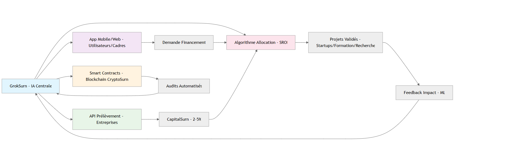

Chapter 4: The SurnBank – Architecture and Governance
Introduction: An Institution for Equity
The SurnBank is the institutional pivot of Surnumerism. Its mission is to redistribute CapitalSurn funds and support the worker who has become an employer, fostering entrepreneurial continuity through satellite projects.
Structure and Governance
Architecture and Organizational Chart for the SurnBank: A Fully Digital and Automated Bank
Surnumerism, with its focus on planetary equity and the valorization of human labor, requires a modern SurnBank, fully digital and automated, under the guidance of an AI (here called GrokSurn). This architecture minimizes human intervention, accelerates processes, and guarantees total transparency, ideal for an experienced promoter such as Wilfried St Dial. It relies on a decentralized blockchain (CryptoSurn), APIs for levies, and open-source algorithms for allocation.
The architecture is designed to be scalable (managing 5 billion USD/year), secure (blockchain audits), and accessible via mobile and web applications. It leverages existing technologies (Ethereum for smart contracts, Python for AI, AWS for hosting) for a rapid launch in Q1 2026.
Key Principles of the Architecture
- Fully Digital: No physical offices; everything via cloud (AWS/Google Cloud).
- Automated: The AI GrokSurn manages 95% of decisions (allocation, audits), with minimal human supervision (5% for complex cases).
- AI Governance: GrokSurn (based on a model like Grok-3) is the “core”: it analyzes, predicts, and executes, freeing the promoter.
- Advantages for Senior Promoters: Time saved (0 hours/day in management), infinite scalability, and durable legacy (an “eternal” AI).
Technical Architecture
Frontend Layer (User Interface)
- Technology: Mobile/web application (React Native for iOS/Android, Next.js for web).
- Role: Funding requests for executives (upload CV, projects), visualization of funds.
- Access: Authentication via blockchain (wallet CryptoSurn).
Backend Layer (Central AI)
- Technology: GrokSurn (AI): Open-source LLM (e.g., Llama 3) with ML algorithms (TensorFlow) for selection (merit: D + P × 0.5 + A × 0.1).
- Role: SROI prediction, automatic allocation (70% projects, 20% training, 10% research).
- Hosting: Serverless cloud (AWS Lambda), cost <1,000 USD/year for 1 million transactions.
Blockchain Layer (CryptoSurn)
- Technology: Ethereum smart contracts (Solidity) for levies (0.1% of transactions) and audits.
- Role: Traceability (every USD tracked), automatic execution (e.g., funds released if SROI >1.5).
- Security: Multi-signature (AI + promoter + SurnBank).
Integration Layer (API)
- Technology: APIs for corporations (e.g., automatic levy on ERP like SAP).
- Role: Real-time flows (net revenues → CapitalSurn → projects).
Monitoring Layer (Feedback Loop)
- Technology: AI dashboard.
- Role: Automated reports (e.g., 3,700 jobs created, Gini reduced by 0.04).
Organizational Chart of the Digital SurnBank

Implementation
- Launch: Q1 2026, with 1B USD initial (CapitalSurn).
- Technologies: Ethereum (blockchain), Python/TensorFlow (AI), React (frontend).
- Governance: AI + hybrid council (1 meeting/quarter).
- Explanation: GrokSurn is at the center, automating 95% of flows. The promoter supervises via app (5% time).
Functioning
Allocation:
- 70%: Productive projects (e.g., solar farm in Morocco).
- 20%: Continuing education (e.g., coding for 100,000 youth).
- 10%: Fundamental research (e.g., generic vaccines).
Organizational Chart and Administration
The SurnBank recruits executives like a multinational.
Example: France (2035)
The French SurnBank redistributes 10 billion EUR, financing:
- Hydrogen startups (+50,000 jobs).
- Technical schools (SROI: 1.8).
Key Roles in the SurnBank
- SurnAssist Personality: Senior executives, active or retired, mandated to provide technical support for indexed or co-opted projects.
- SurnFin Personality: Authorized representatives of the SurnBank for launching mini-projects with strong social or economic impact.
- SurnGroup: Institutions, associations, or NGOs requesting assistance from the SurnBank.
Conclusion
The SurnBank embodies ethical governance, using the banking institution as a support to multiply labor and its subsidies, through the entrepreneurial continuity of senior executives. The next chapter explores diversified financial contributions. nétaire : Ajouter comparaison avec une SurnBank en Provence (France rurale) vs prototype en Asie (ex. : Inde) pour diversité -->
Personnes ressources de la Surnbank:
- Personnalité SurnAssist : sont des cadres supérieurs en activité ou pas qui sont mandatés à soutenir techniquement des projets indexés ou cooptés par la Surnbank.
- Personnalité SurnFin : sont des fondé de pouvoir auprès de la Surnbank pour la mise en route de mini-projets à fort impact social ou économique.
- SurnGroup : institutions ou associations ou ONG demandant de l'assistance de la Surnbank.
Conclusion
La SurnBank incarne la gouvernance éthique, utilisant l'institution bancaire comme support pour décupler le travail et ses subsides, via une continuité entrepreneuriale des cadres supérieurs. Le chapitre suivant explore les apports financiers diversifiés. re -->